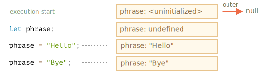
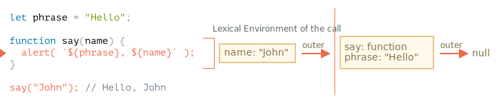
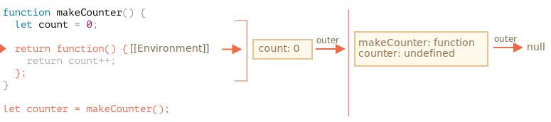
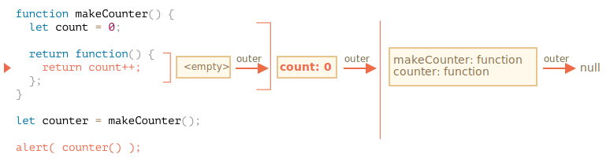

JavaScript 是一种非常面向函数的语言。它给了我们很大的自由度。在 JavaScript 中，我们可以动态创建函数，可以将函数作为参数传递给另一个函数，并在完全不同的代码位置进行调用。
我们已经知道函数可以访问其外部的变量。
现在，让我们扩展知识，来看看更复杂的场景。
```smart header="我们将在这探讨一下 let/const"
在 JavaScript 中，有三种声明变量的方式：let，const（现代方式），var（过去留下来的方式）。
let 声明变量。const 声明的变量的行为也相同（译注：与 let 在作用域等特性上是相同的），因此，本文也涉及用 const 进行变量声明。var 与上面两个有着明显的区别，我们将在 info:var 中详细介绍。如果在代码块 {...} 内声明了一个变量，那么这个变量只在该代码块内可见。
例如：
{
// 使用在代码块外不可见的局部变量做一些工作
let message = "Hello"; // 只在此代码块内可见
alert(message); // Hello
}
alert(message); // Error: message is not defined我们可以使用它来隔离一段代码，该段代码执行自己的任务，并使用仅属于自己的变量：
{
// 显示 message
let message = "Hello";
alert(message);
}
{
// 显示另一个 message
let message = "Goodbye";
alert(message);
}请注意，如果我们使用 `let` 对已存在的变量进行重复声明，如果对应的变量没有单独的代码块，则会出现错误：
```js
// 显示 message
let message = "Hello";
alert(message);
// 显示另一个 message
let message = "Goodbye"; // Error: variable already declared
alert(message);
```对于 if，for 和 while 等，在 {...} 中声明的变量也仅在内部可见：
if (true) {
let phrase = "Hello!";
alert(phrase); // Hello!
}
alert(phrase); // Error, no such variable!在这儿，当 if 执行完毕，则下面的 alert 将看不到 phrase，因此会出现错误。（译注：就算下面的 alert 想在 if 没执行完成时去取 phrase（虽然这种情况不可能发生）也是取不到的，因为 let 声明的变量在代码块外不可见。）
太好了，因为这就允许我们创建特定于 if 分支的块级局部变量。
对于 for 和 while 循环也是如此：
for (let i = 0; i < 3; i++) {
// 变量 i 仅在这个 for 循环的内部可见
alert(i); // 0，然后是 1，然后是 2
}
alert(i); // Error, no such variable从视觉上看，let i 位于 {...} 之外。但是 for 构造在这里很特殊：在其中声明的变量被视为块的一部分。
当一个函数是在另一个函数中创建的时，那么该函数就被称为“嵌套”的。
在 JavaScript 中很容易实现这一点。
我们可以使用嵌套来组织代码，比如这样：
function sayHiBye(firstName, lastName) {
// 辅助嵌套函数使用如下
function getFullName() {
return firstName + " " + lastName;
}
alert( "Hello, " + getFullName() );
alert( "Bye, " + getFullName() );
}这里创建的 嵌套 函数 getFullName() 是为了更加方便。它可以访问外部变量，因此可以返回全名。嵌套函数在 JavaScript 中很常见。
更有意思的是，可以返回一个嵌套函数：作为一个新对象的属性或作为结果返回。之后可以在其他地方使用。不论在哪里调用，它仍然可以访问相同的外部变量。
下面的 makeCounter 创建了一个 "counter" 函数，该函数在每次调用时返回下一个数字：
function makeCounter() {
let count = 0;
return function() {
return count++;
};
}
let counter = makeCounter();
alert( counter() ); // 0
alert( counter() ); // 1
alert( counter() ); // 2尽管很简单，但稍加变型就具有很强的实际用途，比如，用作 随机数生成器 以生成用于自动化测试的随机数值。
这是如何运作的呢？如果我们创建多个计数器，它们会是独立的吗？这里的变量是怎么回事？
理解这些内容对于掌握 JavaScript 的整体知识很有帮助，并且对于应对更复杂的场景也很有益处。因此，让我们继续深入探究。
深入的技术讲解就在下面。
尽管我很想避免编程语言的一些底层细节，但是如果没有这些细节，它们就不完整，所以请准备开始学习吧！为了使内容更清晰，这里将分步骤进行讲解。
在 JavaScript 中，每个运行的函数，代码块 {...} 以及整个脚本，都有一个被称为 词法环境（Lexical Environment） 的内部（隐藏）的关联对象。
词法环境对象由两部分组成：
this 的值）的对象。一个“变量”只是 环境记录 这个特殊的内部对象的一个属性。“获取或修改变量”意味着“获取或修改词法环境的一个属性”。
举个例子，这段没有函数的简单的代码中只有一个词法环境：
这就是所谓的与整个脚本相关联的 全局 词法环境。
在上面的图片中，矩形表示环境记录（变量存储），箭头表示外部引用。全局词法环境没有外部引用，所以箭头指向了 null。
随着代码开始并继续运行，词法环境发生了变化。
这是更长的代码：

右侧的矩形演示了执行过程中全局词法环境的变化：
let 声明前，不能引用它。几乎就像变量不存在一样。let phrase 定义出现了。它尚未被赋值，因此它的值为 undefined。从这一刻起，我们就可以使用变量了。phrase 被赋予了一个值。phrase 的值被修改。现在看起来都挺简单的，是吧？
“词法环境”是一个规范对象（specification object）：它仅仅是存在于 [编程语言规范](https://tc39.es/ecma262/#sec-lexical-environments) 中的“理论上”存在的，用于描述事物如何运作的对象。我们无法在代码中获取该对象并直接对其进行操作。
但 JavaScript 引擎同样可以优化它，比如清除未被使用的变量以节省内存和执行其他内部技巧等，但显性行为应该是和上述的无差。一个函数其实也是一个值，就像变量一样。
不同之处在于函数声明的初始化会被立即完成。
当创建了一个词法环境（Lexical Environment）时，函数声明会立即变为即用型函数（不像 let 那样直到声明处才可用）。
这就是为什么我们可以在（函数声明）的定义之前调用函数声明。
例如，这是添加一个函数时全局词法环境的初始状态：
正常来说，这种行为仅适用于函数声明，而不适用于我们将函数分配给变量的函数表达式，例如 let say = function(name)...。
在一个函数运行时，在调用刚开始时，会自动创建一个新的词法环境以存储这个调用的局部变量和参数。
例如，对于 say("John")，它看起来像这样（当前执行位置在箭头标记的那一行上）：

在这个函数调用期间，我们有两个词法环境：内部一个（用于函数调用）和外部一个（全局）：
say 的当前执行相对应。它具有一个单独的属性：name，函数的参数。我们调用的是 say("John")，所以 name 的值为 "John"。phrase 变量和函数本身。内部词法环境引用了 outer。
当代码要访问一个变量时 —— 首先会搜索内部词法环境，然后搜索外部环境，然后搜索更外部的环境，以此类推，直到全局词法环境。
如果在任何地方都找不到这个变量，那么在严格模式下就会报错（在非严格模式下，为了向下兼容，给未定义的变量赋值会创建一个全局变量）。
在这个示例中，搜索过程如下：
name 变量，当 say 中的 alert 试图访问 name 时，会立即在内部词法环境中找到它。phrase 时，然而内部没有 phrase，所以它顺着对外部词法环境的引用找到了它。让我们回到 makeCounter 这个例子。
function makeCounter() {
let count = 0;
return function() {
return count++;
};
}
let counter = makeCounter();在每次 makeCounter() 调用的开始，都会创建一个新的词法环境对象，以存储该 makeCounter 运行时的变量。
因此，我们有两层嵌套的词法环境，就像上面的示例一样：

不同的是，在执行 makeCounter() 的过程中创建了一个仅占一行的嵌套函数：return count++。我们尚未运行它，仅创建了它。
所有的函数在“诞生”时都会记住创建它们的词法环境。从技术上讲，这里没有什么魔法：所有函数都有名为 [[Environment]] 的隐藏属性，该属性保存了对创建该函数的词法环境的引用。

因此，counter.[[Environment]] 有对 {count: 0} 词法环境的引用。这就是函数记住它创建于何处的方式，与函数被在哪儿调用无关。[[Environment]] 引用在函数创建时被设置并永久保存。
稍后，当调用 counter() 时，会为该调用创建一个新的词法环境，并且其外部词法环境引用获取于 counter.[[Environment]]：

现在，当 counter() 中的代码查找 count 变量时，它首先搜索自己的词法环境（为空，因为那里没有局部变量），然后是外部 makeCounter() 的词法环境，并且在哪里找到就在哪里修改。
在变量所在的词法环境中更新变量。
这是执行后的状态：

如果我们调用 counter() 多次，count 变量将在同一位置增加到 2，3 等。
开发者通常应该都知道“闭包”这个通用的编程术语。
[闭包](https://en.wikipedia.org/wiki/Closure_(computer_programming)) 是指内部函数总是可以访问其所在的外部函数中声明的变量和参数，即使在其外部函数被返回（寿命终结）了之后。在某些编程语言中，这是不可能的，或者应该以特殊的方式编写函数来实现。但是如上所述，在 JavaScript 中，所有函数都是天生闭包的（只有一个例外，将在 <info:new-function> 中讲到）。
也就是说：JavaScript 中的函数会自动通过隐藏的 `[[Environment]]` 属性记住创建它们的位置，所以它们都可以访问外部变量。
在面试时，前端开发者通常会被问到“什么是闭包？”，正确的回答应该是闭包的定义，并解释清楚为什么 JavaScript 中的所有函数都是闭包的，以及可能的关于 `[[Environment]]` 属性和词法环境原理的技术细节。通常，函数调用完成后，会将词法环境和其中的所有变量从内存中删除。因为现在没有任何对它们的引用了。与 JavaScript 中的任何其他对象一样，词法环境仅在可达时才会被保留在内存中。
……但是，如果有一个嵌套函数在函数结束后仍可达，则它具有引用词法环境的 [[Environment]] 属性。
在下面这个例子中，即使在函数执行完成后，词法环境仍然可达。因此，此嵌套函数仍然有效。
例如：
function f() {
let value = 123;
return function() {
alert(value);
}
}
let g = f(); // g.[[Environment]] 存储了对相应 f() 调用的词法环境的引用请注意，如果多次调用 f()，并且返回的函数被保存，那么所有相应的词法环境对象也会保留在内存中。下面代码中有三个这样的函数：
function f() {
let value = Math.random();
return function() { alert(value); };
}
// 数组中的 3 个函数，每个都与来自对应的 f() 的词法环境相关联
let arr = [f(), f(), f()];当词法环境对象变得不可达时，它就会死去（就像其他任何对象一样）。换句话说，它仅在至少有一个嵌套函数引用它时才存在。
在下面的代码中，嵌套函数被删除后，其封闭的词法环境（以及其中的 value）也会被从内存中删除：
function f() {
let value = 123;
return function() {
alert(value);
}
}
let g = f(); // 当 g 函数存在时，该值会被保留在内存中
g = null; // ……现在内存被清理了正如我们所看到的，理论上当函数可达时，它外部的所有变量也都将存在。
但在实际中，JavaScript 引擎会试图优化它。它们会分析变量的使用情况，如果从代码中可以明显看出有未使用的外部变量，那么就会将其删除。
在 V8（Chrome，Opera）中的一个重要的副作用是，此类变量在调试中将不可用。
打开 Chrome 浏览器的开发者工具，并尝试运行下面的代码。
当代码执行暂停时，在控制台中输入 alert(value)。
function f() {
let value = Math.random();
function g() {
debugger; // 在 Console 中：输入 alert(value); No such variable!
}
return g;
}
let g = f();
g();正如你所见的 —— No such variable! 理论上，它应该是可以访问的，但引擎把它优化掉了。
这可能会导致有趣的（如果不是那么耗时的）调试问题。其中之一 —— 我们可以看到的是一个同名的外部变量，而不是预期的变量：
let value = "Surprise!";
function f() {
let value = "the closest value";
function g() {
debugger; // 在 console 中：输入 alert(value); Surprise!
}
return g;
}
let g = f();
g();V8 引擎的这个特性你真的应该知道。如果你要使用 Chrome/Opera 进行代码调试，迟早会遇到这样的问题。
这不是调试器的 bug，而是 V8 的一个特别的特性。也许以后会被修改。你始终可以通过运行本文中的示例来进行检查。